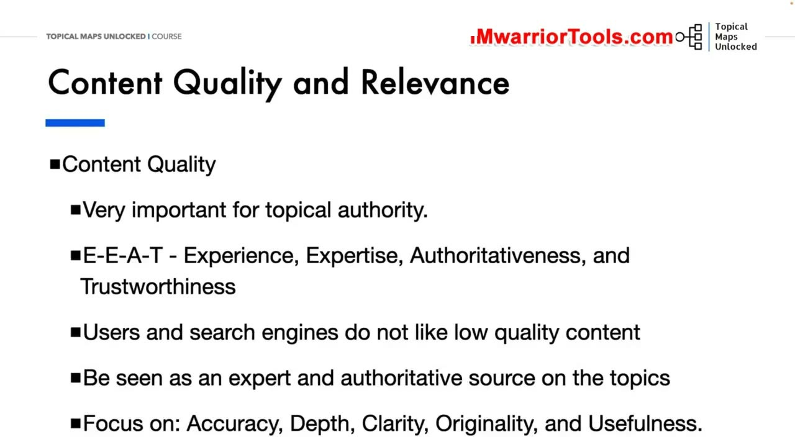
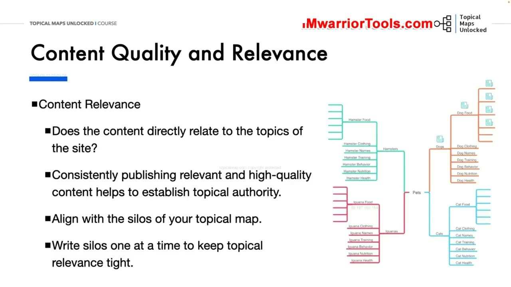
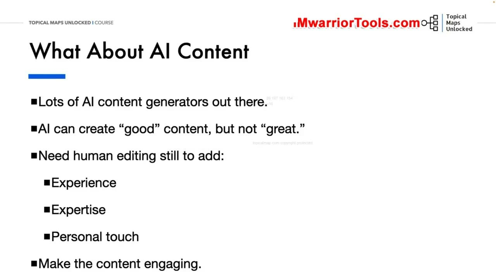
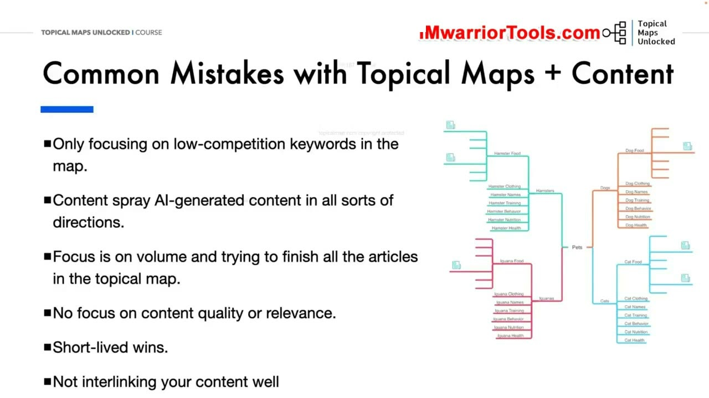

Content Quality and Relevance
1. Chất lượng nội dung (Content Quality) và tiêu chuẩn E-E-A-T của Google
Trong bài mở đầu của Học phần 08, Yoyao đặt nền móng về tư duy sản xuất bài viết: Chất lượng nội dung (Content Quality) và Tính liên quan (Relevance). Để xây dựng thẩm quyền chủ đề (Topical Authority) vững chắc, bạn không thể chỉ dựa vào một bản đồ cấu trúc đẹp đẽ mà nội dung bên trong lại nghèo nàn, hời hợt.
Google và người dùng ngày càng khắt khe với chất lượng bài viết. Yoyao nhấn mạnh chuẩn mực E-E-A-T:
- Experience (Trải nghiệm thực tế): Bằng chứng người viết đã thực sự sử dụng sản phẩm, ghé thăm địa điểm hoặc trải qua tình huống được mô tả.
- Expertise (Chuyên môn sâu): Kiến thức chuyên môn vững chắc, phân tích có chiều sâu học thuật và chuyên ngành.
- Authoritativeness (Tính thẩm quyền): Vị thế uy tín của tác giả và thương hiệu trong lĩnh vực đó.
- Trustworthiness (Độ tin cậy): Yếu tố quan trọng nhất, đảm bảo thông tin luôn chính xác, khách quan và minh bạch nguồn gốc.
Bốn trọng tâm chất lượng bắt buộc phải có trong mỗi bài viết: Độ chính xác (Accuracy), Chiều sâu (Depth), Tính rõ ràng (Clarity), Tính độc bản (Originality) và Tính hữu ích thực tế (Usefulness).

2. Tính liên quan chặt chẽ với Silo và Tác động từ các đợt cập nhật HCU của Google
Bên cạnh chất lượng, yếu tố sống còn thứ hai là Content Relevance (Tính liên quan của nội dung):
Bài viết có trực tiếp liên quan đến chủ đề cốt lõi của website hay không? Ví dụ, một trang web chuyên dạy khóa học Marketing thì không thể tùy tiện xuất bản các bài viết về tiền ảo hay bất động sản chỉ vì thấy có nhiều lượt tìm kiếm. Bạn bắt buộc phải xuất bản nội dung bám sát từng Silo cụ thể trên Topical Map để giữ cho tính liên quan chủ đề luôn ở mức cô đặc và tập trung cao nhất.
Yoyao điểm lại lịch sử các đợt cập nhật thuật toán quan trọng của Google:
- Reviews Updates (từ tháng 4/2021 đến tháng 11/2023): Trừng phạt thẳng tay các bài viết đánh giá sản phẩm chung chung, sao chép thông số kỹ thuật của nhà sản xuất mà không có thử nghiệm thực tế. Đợt này sau đó đã được sáp nhập trực tiếp vào Core Updates.
- Helpful Content Updates (HCU) (từ tháng 8/2022 đến tháng 3/2024): Đánh sập hàng loạt website sản xuất nội dung rác nhắm vào công cụ tìm kiếm thay vì phục vụ người dùng thực tế. Kể từ tháng 3/2024, HCU đã trở thành một phần cốt lõi trong thuật toán xếp hạng chính của Google.

3. Góc nhìn về Nội dung AI (AI Content): Tốt nhưng chưa đủ để xuất sắc
Trước làn sóng bùng nổ của các công cụ AI, Yoyao đưa ra nhận định thực tế và sâu sắc:
AI hiện nay có thể tạo ra nội dung ở mức "khá tốt" (good content) với tốc độ chóng mặt, nhưng nó không thể tự mình tạo ra nội dung xuất sắc (great content) nếu thiếu sự can thiệp của con người. Những gì bài viết AI thuần túy luôn thiếu hụt trầm trọng bao gồm:
- Experience (Trải nghiệm thực tế): AI không có cảm giác, không thể nếm thử đồ ăn, không thể cầm trên tay một chiếc máy ảnh hay tự mình trải nghiệm một chuyến du lịch.
- Expertise (Góc nhìn chuyên gia độc bản): AI chỉ tổng hợp lại những gì đã có sẵn trên internet, do đó nó không thể đưa ra những phát hiện mới hay góc nhìn phản biện đột phá.
- Personal touch (Dấu ấn cá nhân): Giọng văn truyền cảm xúc, các mẩu chuyện hậu trường chân thật và sự thấu cảm với người đọc.
- Khả năng gắn kết (Engagement): Định dạng bài viết hấp dẫn, bảng biểu so sánh trực quan và cách dẫn dắt lôi cuốn.
Vì vậy, công thức tối ưu là sử dụng AI như một trợ lý đắc lực để nghiên cứu và soạn dàn ý thô, sau đó biên tập viên con người sẽ bổ sung trải nghiệm thực tế và hoàn thiện phong cách thương hiệu.

4. Bốn sai lầm phổ biến khi kết hợp Topical Map và Sản xuất nội dung
Cuối bài học, Yoyao đúc kết 4 sai lầm chí mạng mà rất nhiều người làm SEO mắc phải khi triển khai Topical Map:
- Chỉ chăm chăm săn lùng từ khóa cạnh tranh thấp: Bỏ qua các chủ đề trụ cột cốt lõi vì thấy độ khó cao, khiến bản đồ chủ đề bị thủng lỗ chỗ và website không thể thiết lập được thẩm quyền toàn diện.
- Phun nội dung AI vô tội vạ khắp mọi hướng (Content Spraying): Dùng công cụ tự động tạo hàng ngàn bài viết AI lan man không có kiểm soát chất lượng, dẫn đến nguy cơ bị Google gắn cờ spam và phạt toàn site.
- Chỉ tập trung vào số lượng bài viết: Cố gắng hoàn thành thật nhanh số lượng bài trên bản đồ mà quên mất chất lượng, tính liên quan và giá trị thực tế mang lại cho độc giả. Những chiến thắng ban đầu kiểu này thường rất ngắn ngủi.
- Không chú trọng liên kết nội bộ (Internal Linking): Viết xong bài nào là để mặc bài đó như những hòn đảo cô lập, không kết nối chặt chẽ theo cấu trúc phân cấp của Silo để luân chuyển dòng chảy thẩm quyền (link juice).

Nguồn và đối chiếu
- Topical Maps Unlocked 2.0 · 01-Content Quality and Relevance (Video bài học chính).
- Bản tiếng Anh không có video riêng cho bài học này; nội dung đối chiếu trực tiếp từ slide và video chính.